その他の製品
AKGの本社サイトは過去の製品についての資料が充実している。当サイトに収録した国内で販売されたことが確認できたもの以外にも、下記のような機種があるようだ。
K8/K80/K89
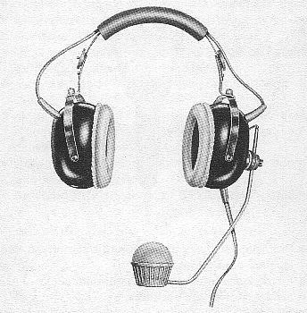
K8がイヤプロテクター、K80がプロテクター・ヘッドフォン、K89がマイク付きプロテクター・ヘッドフォン
Ｋ15ＴＶ/Ｋ16ＴＶ/Ｋ17ＴＶ/K18
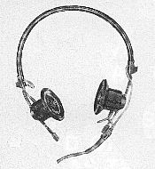
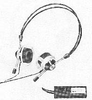
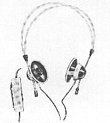
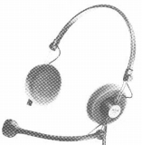
放送業務用と思われるモデル
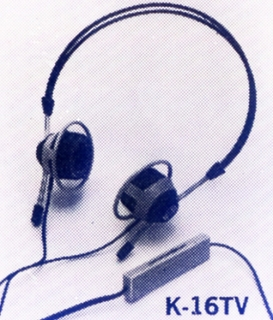
K16TV モノラルのヘッドフォン。再生周波数帯域は60-16,000Hzで、1975年頃、アメリカでは定価24.50ドルで販売されていたようだ。
K21
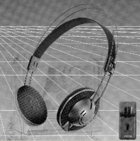
ボリュウム付きの機種
K36D/K48/K108/K158
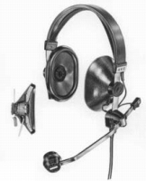 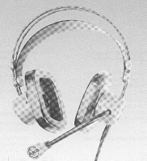 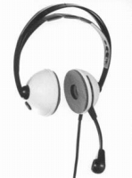 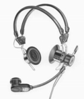
マイク付きヘッドフォン
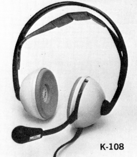
K108 マイク付きのヘッドフォン。再生周波数帯域は20-20,000Hzで、1975年頃、アメリカでは定価39ドルで販売されていたようだ。
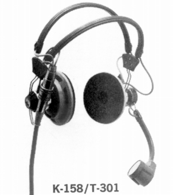
K158/T301 マイク付きのヘッドフォン。K158とはマイクの仕様が違うようだ。再生周波数帯域は20-20,000Hzで、1975年頃、アメリカではノーマルのK158が定価89ドル、K158/T301は99ドルで販売されていたようだ。
K109
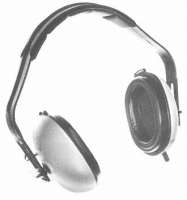
密閉型らしきヘッドフォン
K2000
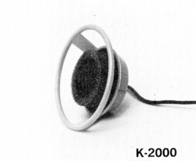
耳掛式のモノラル・フォン。再生周波数帯域は60-16,000Hzで、1975年頃、アメリカでは定価7.95ドルで販売されていたようだ。